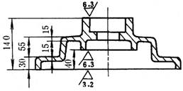

注 意 事 项
图 例
说 明
改 进 前
改 进 后
选择合理的尺寸封闭环
左图未留尺寸封闭环
封闭环应留在非主要尺寸上
加工面与毛坯面的关联尺寸原则上在一个坐标方向，只应当标注一个（当多于一个时，应注明哪一个是划线基准）


毛坯面本身的尺寸误差大，一个加工面难以同时满足几个毛坯面的尺寸关系
零件图上的尺寸、公差、表面粗糙度、技术要求等，尽可能集中标注

阅读方便、清楚、避免加工时出差错
尺寸标注应考虑到加工顺序
左图是从精磨的齿轮端面起注尺寸，而此面是最后加工的，应按右图从车削端面起标注为好（有特殊要求者例外）
尺寸标注应满足加工时的实际要求
箱体孔不仅要注出孔距测量尺寸，而且要注出加工时所需的坐标尺寸
尺寸标注应考虑检验和测量方便

分别注出不同直径的钻削深度，便于测量